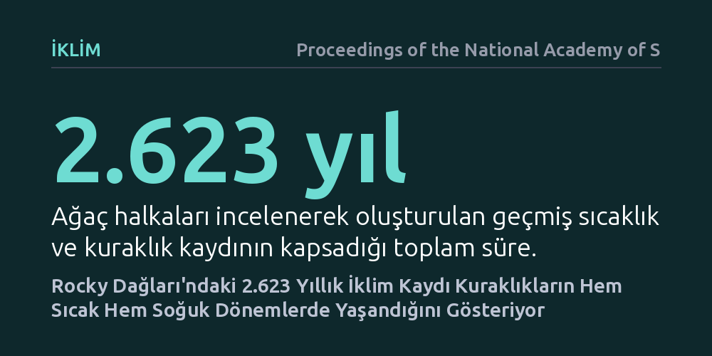

IKLIM · Proceedings of the National Academy of Sciences · 2026-10-17
Araştırmacılar, ağaç halkalarını inceleyerek Colorado Rocky Dağları'nın 2.623 yıllık sıcaklık geçmişini yeniden oluşturdu. Elde edilen bulgular, geçmişteki büyük kuraklıkların hem sıcak hem de soğuk dönemlerde yaşandığını ve yüksek sıcaklığın su kaybını daha da derinleştirdiğini ortaya koydu.
Kuraklığın yalnızca yağış azlığından kaynaklanmadığını, artan sıcaklıkların buharlaşmayı hızlandırarak su krizini neden daha tehlikeli hale getirdiğini anlamamızı sağlar.

Colorado Nehri ve Rio Grande havzaları, Kuzey Amerika'da on milyonlarca insanın içme suyunu ve geniş tarım alanlarını besleyen hayati su kaynaklarıdır. Bu nehirlerin debisini büyük ölçüde kış aylarında Rocky Dağları'na düşen ve ilkbaharda eriyen karlar belirler. Ancak son yıllarda bölgede yaşanan şiddetli kuraklıklar, barajlardaki su seviyelerini tehlikeli biçimde düşürmüş ve su paylaşımı tartışmalarını alevlendirmiştir. Bilim insanları uzun süredir bu kuraklıkların olağan iklim döngülerinin bir parçası mı yoksa ısınan havanın doğrudan bir sonucu mu olduğunu anlamaya çalışmaktadır.
İklim tartışmalarında kuraklık genellikle yalnızca yağmur veya kar yağışının azalması şeklinde düşünülür. Oysa hava sıcaklığının yükselmesi, topraktaki nemin ve bitkilerin terleme yoluyla atmosfere bıraktığı suyun buharlaşmasını büyük ölçüde artırır. Geçmişte yaşanan büyük kuraklıkların ne kadarının yağış azlığından, ne kadarının ise sıcaklık baskısından kaynaklandığını ortaya çıkarmak, günümüzdeki su yönetimi politikalarının geleceğini belirlemek açısından kritik önem taşır.
Termometrelerle yapılan aletli sıcaklık ölçümleri yalnızca son yüz elli yıllık bir dönemi kapsar. Bu süre, gezegenin binlerce yıla yayılan doğal iklim dalgalanmalarını ve nadir görülen aşırı kuraklık dönemlerini değerlendirmek için son derece kısıtlıdır. Araştırmacılar, bu zaman engelini aşmak için Rocky Dağları'nın yüksek rakımlı ve zorlu yamaçlarında binlerce yıldır ayakta kalan dayanıklı çam ağaçlarının kayıtlarına başvurdu.
Ekip, bölgedeki ağaçların yıllık büyüme halkalarını ve bu halkaların odun yoğunluklarını mikroskobik düzeyde analiz etti. Ağaçlar elverişli ve ılık yaz aylarında daha geniş ve yoğun hücre halkaları oluştururken, soğuk veya stresli dönemlerde dar halkalar meydana getirir. Araştırmacılar bu büyüme desenlerini modern ölçümlerle karşılaştırıp kalibre ederek, M.Ö. 6. yüzyıla kadar uzanan 2.623 yıllık kesintisiz bir sıcaklık ve akış rekonstrüksiyonu oluşturdu.
Elde edilen 2.600 yılı aşkın kayıtlar, kuraklıkların tek tip bir iklim koşulunda ortaya çıkmadığını gösterdi. Veriler, geçmişte hem belirgin biçimde soğuk geçen dönemlerde hem de aşırı sıcak dönemlerde büyük kuraklıkların yaşandığını ortaya koydu. Örneğin büyük volkanik patlamaların ardından atmosferi kaplayan parçacıkların neden olduğu soğuma dönemlerinde bile ciddi yağış eksiklikleri ve kuraklıklar gelişebilmişti.
Bununla birlikte araştırma, sıcak dönemlerde yaşanan kuraklıkların su kaynakları üzerinde çok daha tahrip edici etkiler bıraktığını kanıtladı. Sıcaklık yüksek olduğunda, nehir debilerindeki düşüş aynı yağış eksikliğine maruz kalan soğuk dönemlere kıyasla belirgin şekilde daha derin olmaktadır. Bu durum, günümüzde yaşanan kuraklıkların geçmişteki benzer yağış kıtlıklarına göre neden daha şiddetli hissedildiğini ve nehir yataklarını neden daha hızlı kuruttuğunu açıklamaktadır.
Bu bulgular, gelecekteki su yönetimi planlarının yalnızca yağış miktarına odaklanarak yapılamayacağını net bir şekilde ortaya koymaktadır. Bölgede yağışlar gelecekte dönemsel olarak ortalama seviyelere dönse bile, artan küresel sıcaklıklar nedeniyle buharlaşma kayıpları yüksek kalmaya devam edecektir. Bu mekanizma, nehir debilerini sürekli baskı altında tutarak su kıtlığını kalıcı bir duruma getirebilir.
Sonuç olarak, Rocky Dağları'ndan elde edilen binyıllık veriler, iklim değişikliği çağında su krizinin doğasını daha berrak görmemizi sağlamaktadır. Baraj işletme stratejileri, tarımsal sulama altyapıları ve şehirlerin su tahsis planları, artık sadece kurak kışları değil, düşen suyu buharlaştırıp nehre ulaşmadan yok eden sıcak yazları da hesaba katarak yeniden düzenlenmek zorundadır.